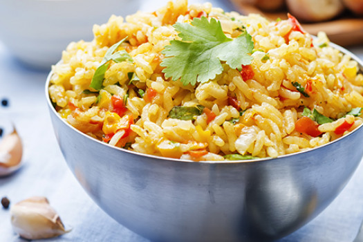

Receita
Arroz tropical

- Ingredientes:
2 xícaras de cenoura ralada
1 xícara de salsinha picada
1 xícara de cebolinha picada
½ cebola picada
4 dentes de alho amassado
1 fio de óleo
4 xícaras de água
2 xícaras de arroz
Modo de preparo:
Doure a cebola picada junto ao alho e adicione o arroz, mexa bem.
Posteriormente, adicione a água e os demais ingredientes.
Espere cerca de 30 minutos para cozinhar.
Desligue o fogo e sirva.
Clique aqui para receita Enroladinho de abobrinha